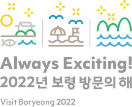

2022 Visit Boryeong Year

2022保宁访问年宗旨说明
为营造官方认可的国际性活动——2022保宁海洋泥浆博览会(7月16 日至8月15日)的宣传氛围，并以韩国国内最长的保宁海底隧道开通 为契机，开启保宁市旅游业腾飞元年，并宣布2022年为保宁访问 年。
重新审视保宁的价值
- 到访保宁意味着
- 摆脱忙忙碌碌而又反反复复的日常生活，重新获得活力，体验不 同寻常的全新日常。
保宁市拥有包括大川和武昌浦海水浴场在内秀丽海洋旅游资源，入 选为由健康产业协会评定的忠清南道1号K-健康城市。
2022保宁访问年标志
-
Primary Logo
-
Mixed Logo
-
Vertical Logo
‘Always Exciting’ ‘总让人兴奋的保宁’为主题，释放保宁多彩魅 力的同时，展现素有快乐之城美名的保宁市城市面貌。 使用高彩度颜色，强调缤纷多彩的全球海洋旅游城市面貌，并对修 复、治愈、大海、大山、阳光等广泛热议的关键词进行图标化，组合 成一个象征性符号。 三个图标分别象征‘实现治愈的修复’、‘快乐的大海和清净海洋泥浆’、 ‘得天独厚的自然环境’，同时承载着融合上述三个象征含义的‘保宁未 来之光’。